| 과목명 | 고급웹프로그래밍 |
|---|---|
| 프로젝트 이름 | 혼밥지도 SoloMap |
| 이름 | 장민준 |
| 학번 | 60231223 |
| 제출일 | 2026년 12월 |
학교 주변 식당을 "혼자 가기 편한 정도(혼밥 난이도 Lv.1~5)"로 보여 주는 서비스입니다. 같은 학교 학생이 직접 혼밥해 보고 남긴 리뷰가 난이도에 반영되고, 식당을 다녀올 때마다 체크인해서 나만의 혼밥 레벨을 키울 수 있습니다.
| 항목 | 제안 당시 | 최종 구현 | 바꾼 이유 |
|---|---|---|---|
| 로그인 유지 | JWT를 httpOnly 쿠키로 발급 | 세션 쿠키 + DB 세션 저장 | 수업 방식(express-session)과 맞추고, 로그아웃 시 서버에서 세션을 즉시 지울 수 있게 함 |
| 인증 메일 발송 | Resend 등 외부 메일 API | nodemailer + SMTP | 별도 서비스 가입 없이 학교 메일로 바로 보낼 수 있음. 로컬에서 SMTP가 없으면 코드를 서버 콘솔에 출력 |
| 레벨 규칙 | 레벨별 식당을 정해진 수만큼 방문해야 다음 레벨 | 방문한 식당 난이도를 경험치로 누적 | 어려운 식당일수록 경험치가 커서 "도전"의 의미가 분명하고, 규칙이 한 줄로 설명됨 |
| 체크인 API 경로 | /api/visits | /api/places/:id/checkins, /api/users/me/* | 체크인이 식당에 속한 데이터임을 경로로 표현 |
| 위치 확인 체크인 | 식당 반경 200m 안에서만 인정(선택) | 구현하지 않음 | 위치 권한 거부 시 처리가 복잡해, 하루 1회 제한으로 부정 사용을 막음 |
로컬 개발 환경(NODE_ENV=development)에서 SMTP 설정이 비어 있으면 학교 메일 인증 코드는 메일 대신 서버 콘솔에 출력됩니다. 시드 사용자는 이미 인증된 상태라 코드 없이 바로 리뷰·체크인을 시험할 수 있습니다.
| 사용자 | 이메일 | 비밀번호 | 상태 |
|---|---|---|---|
| A | seed-a@mju.ac.kr | seedpass1234 | 학교 메일 인증 완료 · 닉네임 시드학우A |
| B | seed-b@mju.ac.kr | seedpass1234 | 학교 메일 인증 완료 · 닉네임 시드학우B |
두 계정은 prisma/seed.ts가 bcrypt(saltRounds 10)로 비밀번호를 암호화해 넣는 테스트 계정이며, 실제 사용하는 이메일이 아닙니다.
1:N 관계 5개 — User→Review, User→CheckIn, User→EmailVerification, Place→Review, Place→CheckIn. Review와 CheckIn은 User와 Place를 잇는 테이블이라, 사실상 User와 Place의 N:M 관계를 두 가지 의미(리뷰, 방문)로 나눠 표현합니다. 사용자·식당이 삭제되면 관련 리뷰·체크인·인증 코드도 함께 삭제됩니다(onDelete: Cascade).
| 모델 | 주요 필드 | 제약 · 의미 |
|---|---|---|
| User | id, email, passwordHash, nickname, isVerified, createdAt | email·nickname 고유. email은 @mju.ac.kr만 허용. 비밀번호는 bcrypt 해시만 저장. isVerified가 true여야 리뷰·체크인 가능 |
| EmailVerification | userId(FK), codeHash, attempts, expiresAt | 코드 원문 대신 SHA-256 해시 저장. 10분 유효, 5회 틀리면 무효 |
| Place | id(카카오 장소 ID), name, category, roadAddress, lat, lng, area, baseSoloLevel, avgSoloLevel, reviewCount | baseSoloLevel은 시드 기본 난이도(1~5). 리뷰가 바뀔 때마다 avgSoloLevel·reviewCount를 다시 집계 |
| Review | userId(FK), placeId(FK), soloLevel, content, createdAt, updatedAt | 주요 데이터(CRUD). (userId, placeId) 고유 → 한 식당에 1인 1리뷰. soloLevel 1~5, content 1~500자 |
| CheckIn | userId(FK), placeId(FK), levelAtVisit, visitDate | (userId, placeId, visitDate) 고유 → 같은 식당 하루 1회. levelAtVisit은 방문 당시 난이도(경험치) |
| Session | sid, sess, expire | express-session 저장소(connect-pg-simple). 서버를 다시 켜도 로그인 유지 |
로그인 열: 필요 = 로그인 세션 필요(requireAuth), 인증 = 로그인 + 학교 메일 인증 필요(requireAuth + requireVerified). 모든 실패 응답은 { message } JSON이며 에러 처리 미들웨어(error.middleware.ts)가 상태 코드를 붙입니다.
| 메서드 | 경로 | 로그인 | 설명 | 성공 | 실패 |
|---|---|---|---|---|---|
인증 · 사용자 (auth.routes.ts → auth.controller.ts) | |||||
| POST | /api/auth/signup | - | 회원가입 + 인증 코드 발송 | 201 | 400 입력 누락·학교 메일 아님·비밀번호 8자 미만·닉네임 2~12자 아님 / 409 이메일·닉네임 중복 |
| POST | /api/auth/login | - | 로그인(세션 발급) | 200 | 401 이메일 또는 비밀번호 불일치 |
| POST | /api/auth/logout | - | 로그아웃(세션 삭제) | 204 | - |
| GET | /api/auth/me | 필요 | 내 정보 + 레벨 | 200 | 401 |
| POST | /api/auth/verify/send | 필요 | 인증 코드 재발송 | 200 | 400 이미 인증됨 / 401 / 429 60초 안에 재요청 |
| POST | /api/auth/verify | 필요 | 인증 코드 확인 | 200 | 400 6자리 아님·코드 불일치·만료·5회 초과 / 401 |
식당 · 체크인 (place.routes.ts → place.controller.ts, checkin.controller.ts) | |||||
| GET | /api/places/search?query= | - | 키워드 검색(카카오 + 시드 식당 병합) | 200 | 카카오 키가 없거나 실패하면 시드 식당만으로 응답 |
| GET | /api/places?query=&soloLevel=&area= | - | DB 식당 검색·필터 | 200 | - |
| GET | /api/places/:id | - | 식당 상세 + 표시 난이도 | 200 | 404 없는 식당 |
| GET | /api/places/:id/reviews | - | 식당 리뷰 목록 | 200 | - |
| POST | /api/places/:id/checkins | 인증 | 다녀왔어요(체크인) | 201 | 401 / 403 메일 인증 전 / 404 없는 식당 / 409 같은 날 같은 식당 |
리뷰 (주요 데이터) (review.routes.ts → review.controller.ts → review.service.ts) | |||||
| POST | /api/reviews | 인증 | 리뷰 등록 | 201 | 400 placeId 누락·난이도 1~5 아님·내용 1~500자 아님 / 401 / 403 / 404 없는 식당 / 409 같은 식당 중복 |
| GET | /api/reviews/place/:placeId | - | 식당별 리뷰 목록 | 200 | - |
| GET | /api/reviews/:id | - | 리뷰 상세 | 200 | 404 없는 리뷰 |
| GET | /api/reviews/me | 필요 | 내가 쓴 리뷰 | 200 | 401 |
| PATCH | /api/reviews/:id | 인증 | 리뷰 수정 | 200 | 400 / 401 / 403 남의 리뷰·메일 인증 전 / 404 |
| DELETE | /api/reviews/:id | 인증 | 리뷰 삭제 | 204 | 401 / 403 남의 리뷰·메일 인증 전 / 404 |
내 기록 (user.routes.ts → checkin.controller.ts 등) | |||||
| GET | /api/users/me | 필요 | 내 정보 | 200 | 401 |
| GET | /api/users/me/reviews | 필요 | 내 리뷰 | 200 | 401 |
| GET | /api/users/me/level | 필요 | 레벨·칭호·경험치·진행률 | 200 | 401 |
| GET | /api/users/me/checkins | 필요 | 정복한 식당(방문일·횟수) | 200 | 401 |
| GET | /api/users/me/recommendations | 필요 | 다음 도전 식당 3곳 | 200 | 401 |
기타 (app.ts) | |||||
| GET | /api/health | - | 서버 상태 | 200 | - |
| GET | /api/config | - | 지도 공개 설정 | 200 | - |
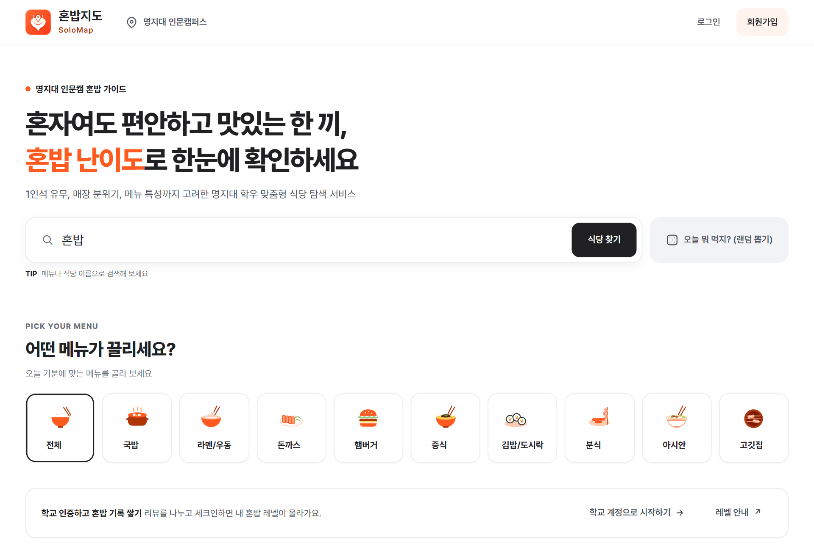
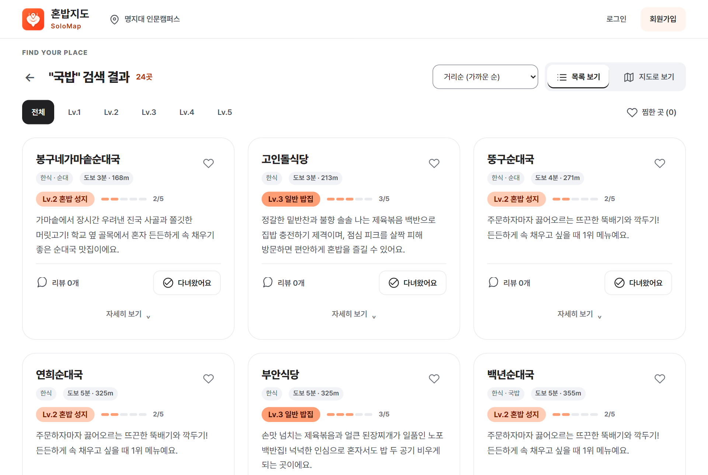
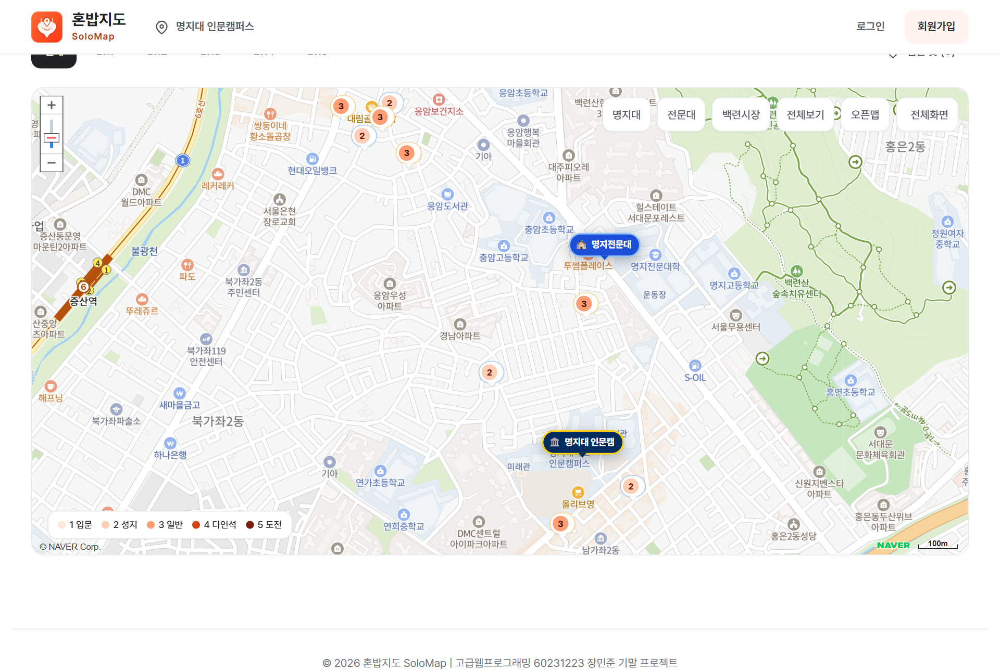
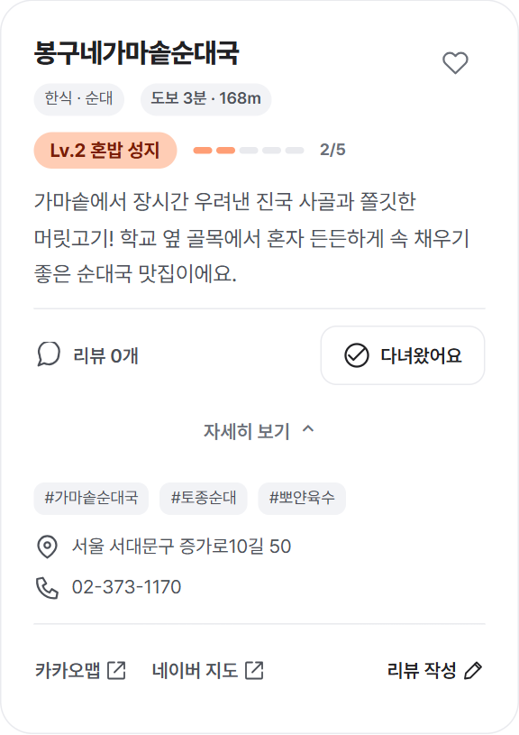
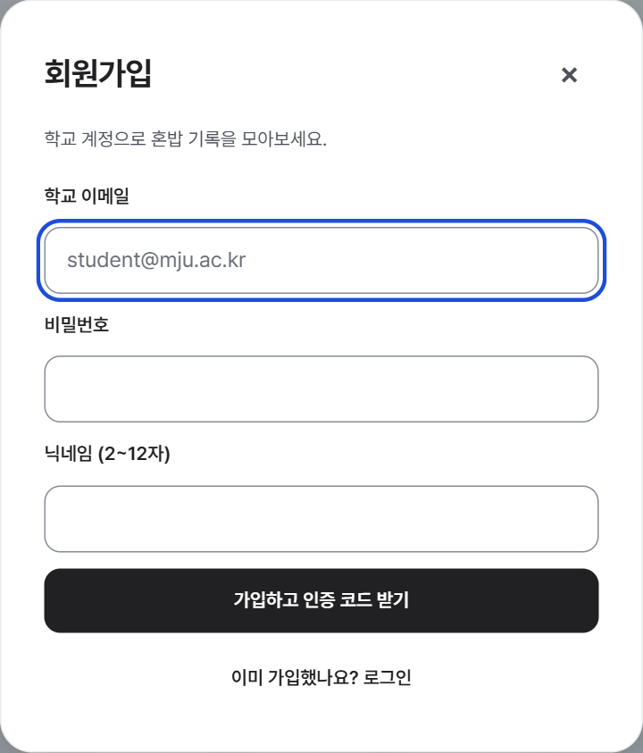
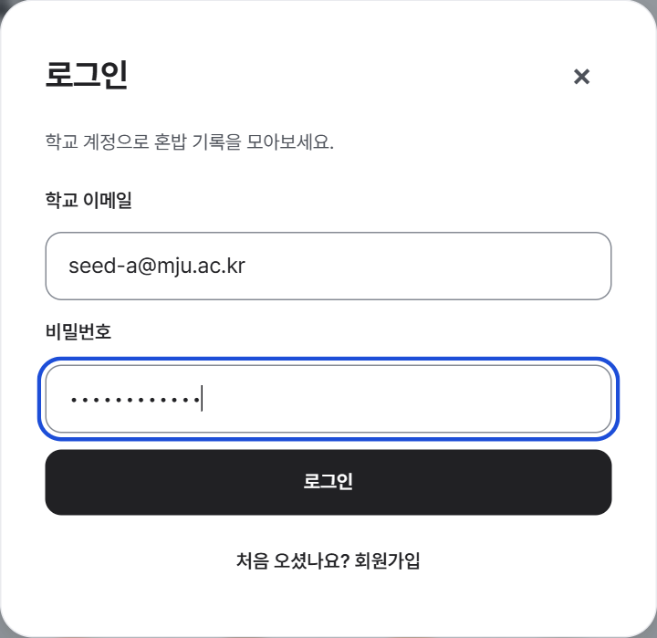
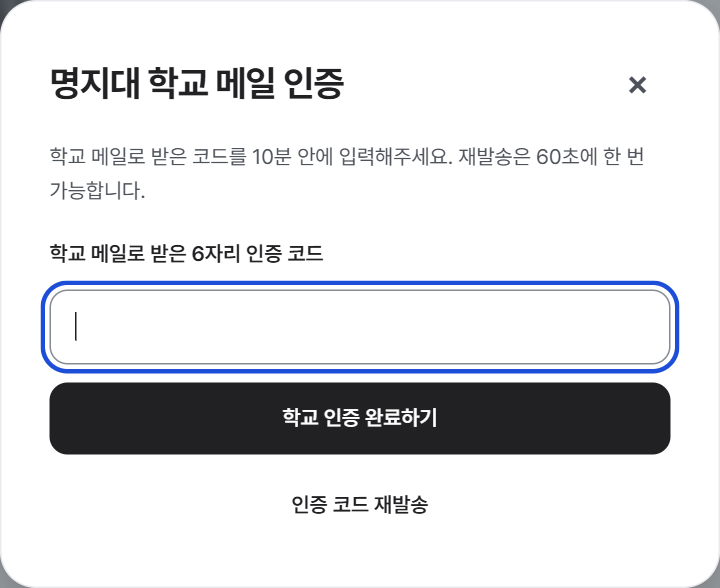
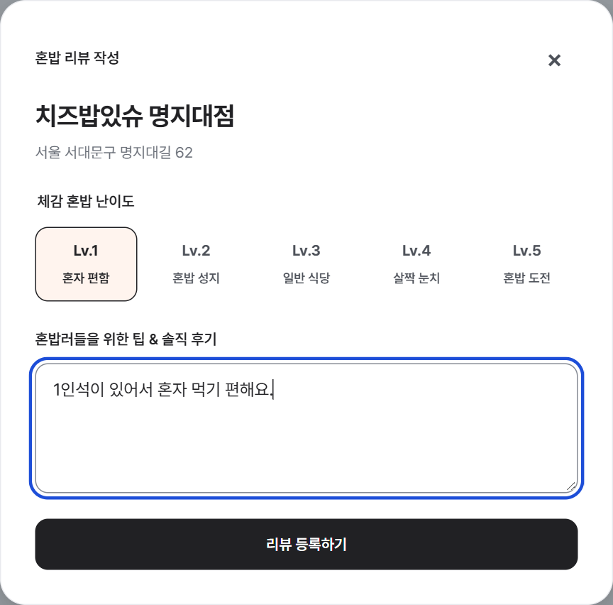
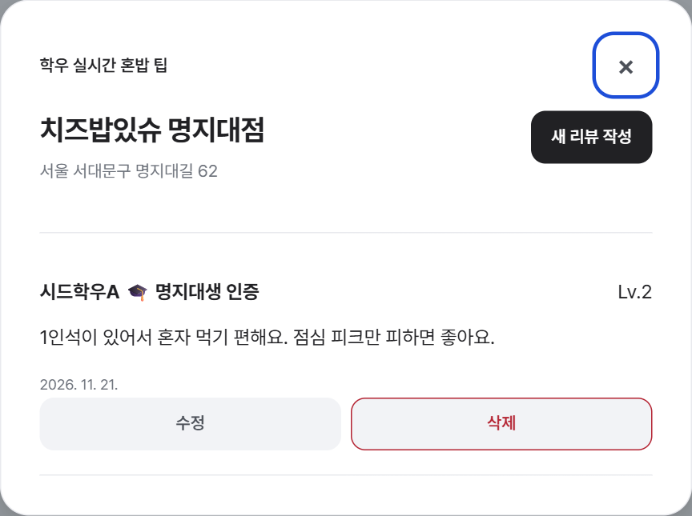
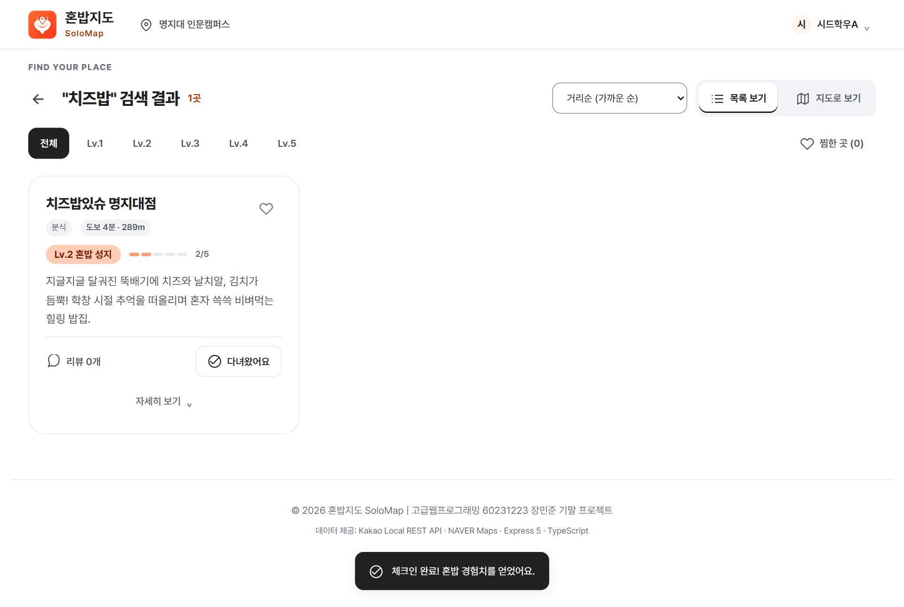
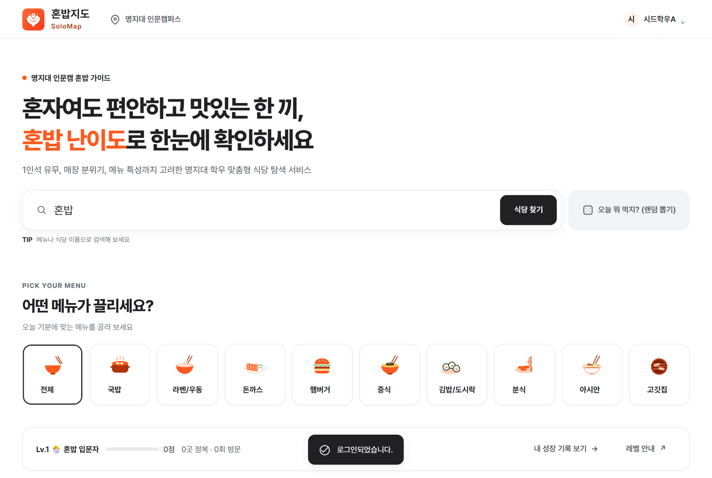
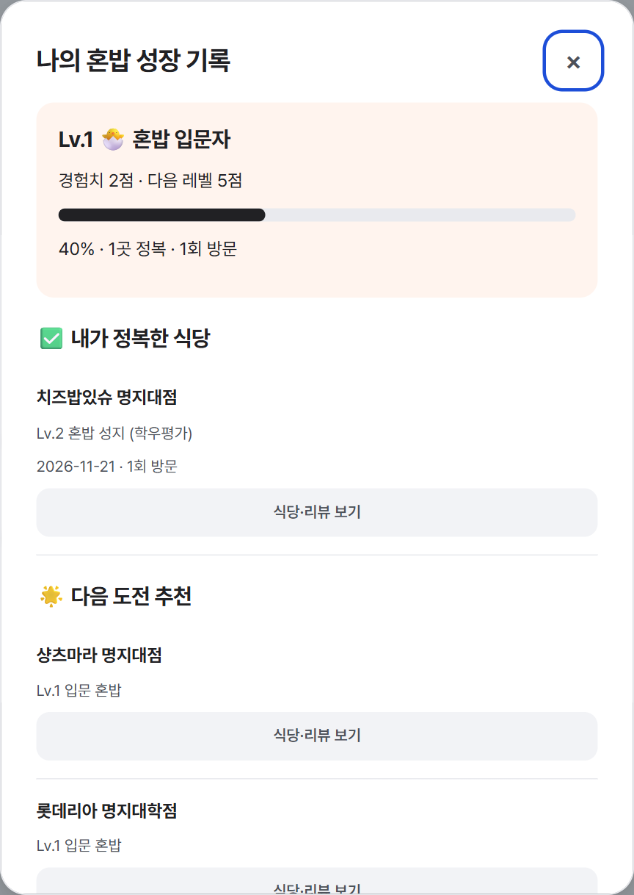
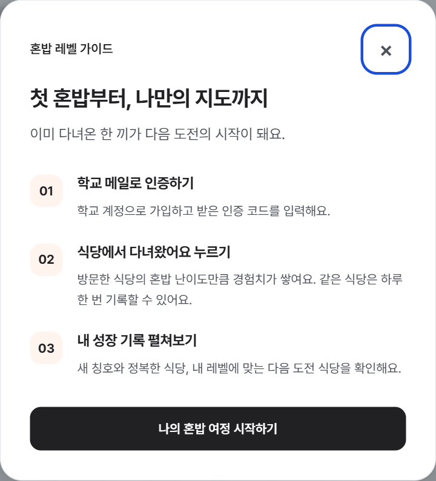
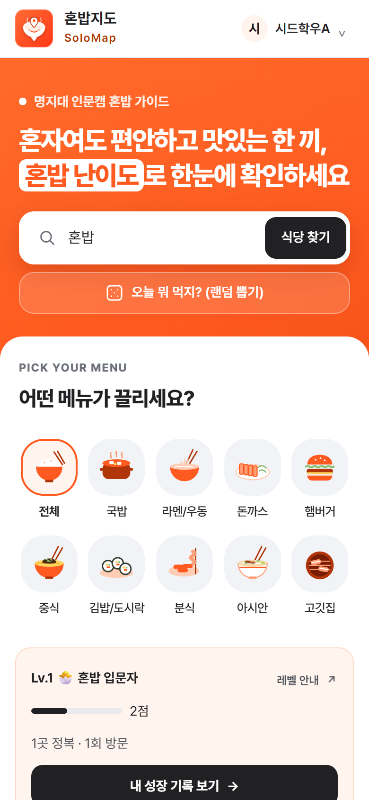
사용자 동작 → fetch 요청 → Router · Controller → (Service · DB) → 응답 → 화면 표시. 화면 쪽 fetch는 모두 public/account.js의 apiRequest() 또는 public/main.js의 fetch()로 보냅니다.
authForm submit → POST /api/auth/signupsignup()registerUser(): 도메인·길이 검사, 중복 확인, bcrypt 해시, User 생성, 코드 해시 저장·메일 발송POST /api/auth/verify → 200 → "인증 완료"POST /api/auth/loginlogin() → passport-localbcrypt.compare, 세션을 Session 테이블에 저장renderAccountMenu()가 닉네임·내 기록 바 표시POST /api/auth/logout → 204 → 로그인 버튼으로 복귀loadPlaces() → GET /api/places/search?query=searchPlaces()calculateDisplaySoloLevel()renderFilteredPlaces()가 카드 목록, 지도 보기 시 숫자 마커 표시btnSubmitReview click → POST /api/reviews (수정은 PATCH /api/reviews/:id)createReview()createReview(): 입력 검증, 식당 확인, 트랜잭션으로 Review 생성 + Place 평균·개수 재집계refreshPlaceAfterReview()가 카드 난이도·리뷰 수 갱신DELETE /api/reviews/:id → 204checkInById() → POST /api/places/:id/checkinscreateCheckIn()checkInPlace(): 식당 확인, KST 날짜 중복 검사, CheckIn 저장, 레벨 재계산openMyPage() → GET /api/users/me/level, /me/reviews, /me/checkins, /me/recommendationsgetMyLevel() 등getUserLevelInfo(), getUserConqueredPlaces(), getRecommendedPlaces()levelAtVisit로 저장하고, 모든 체크인의 합을 경험치로 계산합니다. 어려운 식당일수록 경험치가 큽니다.| 파일 | 함수 · 역할 |
|---|---|
src/routes/place.routes.ts | POST /:id/checkins — requireAuth, requireVerified 뒤에 createCheckIn 연결 |
src/controllers/checkin.controller.ts | createCheckIn() 201 응답, getMyLevel(), getMyCheckIns(), getMyRecommendations() |
src/services/level.service.ts | checkInPlace() 중복 검사·저장, getKSTDateString() 한국 날짜, calculateLevelFromCheckIns() 경험치·레벨, getRecommendedPlaces() 추천 |
public/account.js | checkInById() 요청·레벨업 알림, openMyPage() 성장 기록 표시 |
| 코드 | 상황 | requests.http |
|---|---|---|
| 409 | 같은 날 같은 식당 다시 체크인 | 18 |
| 404 | 없는 식당 체크인 | 19 |
| 403 | 학교 메일 인증 전 체크인 | 29 |
| 401 | 로그인하지 않음 | - |
avgSoloLevel)와 리뷰 수(reviewCount)를 다시 집계해 Place에 저장합니다.calculateDisplaySoloLevel())에서만 정합니다. 리뷰가 1개 이상이면 평균을 반올림한 레벨에 "(학우평가)"를 붙이고, 없으면 시드 기본 난이도를 씁니다.| 파일 | 함수 · 역할 |
|---|---|
src/services/review.service.ts | createReview()·updateReview()·deleteReview() 검증과 트랜잭션 재집계, calculateDisplaySoloLevel() 표시 난이도, ensurePlaceExists() 식당 확인 |
src/controllers/place.controller.ts | searchPlaces()·getPlaces()·getPlaceDetail()이 응답에 displaySolo를 담음 |
public/account.js | refreshPlaceAfterReview() 등록 후 카드 난이도 갱신 |
| 코드 | 상황 | requests.http |
|---|---|---|
| 400 | 난이도가 1~5 정수가 아님, 내용 누락·500자 초과 | 04, 22 |
| 409 | 같은 식당에 두 번째 리뷰 | 25 |
| 403 | 다른 사용자의 리뷰 수정·삭제 | 11 |
| 404 | 없는 리뷰·식당 | 08 |
isVerified = true)만 리뷰를 쓰고 체크인할 수 있습니다. 리뷰 읽기와 식당 검색은 로그인 없이 누구나 할 수 있습니다.| 파일 | 함수 · 역할 |
|---|---|
src/services/auth.service.ts | registerUser() 도메인 검사·가입, sendVerificationCode() 재발송·60초 제한, verifyEmailCode() 만료·시도 횟수 확인 |
src/middlewares/auth.middleware.ts | requireAuth() 401, requireVerified() 인증 전 403 |
src/lib/mailer.ts | sendVerificationEmail() SMTP 발송(로컬에서 설정이 없으면 콘솔 출력) |
| 코드 | 상황 | requests.http |
|---|---|---|
| 400 | 학교 메일이 아닌 주소로 가입, 틀린 인증 코드 | 26, 30 |
| 403 | 인증 전 리뷰 등록·체크인 | 28, 29 |
| 429 | 60초 안에 인증 코드 재발송 요청 | - |
requests.http 01~31을 npm run reset 직후 순서대로 실행해, 31개 요청이 모두 제목의 상태 코드와 일치하는 것을 확인했습니다.